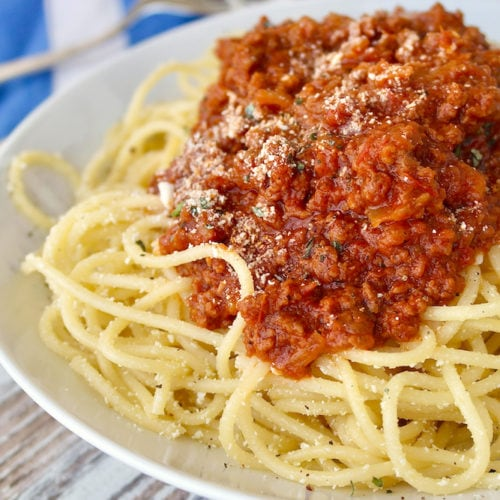

Spaghetti

Description
This recipe is based on Bolognese sauce, where the meat sauce simmers on the stove for hours and hours, getting all the flavors to marry together, get concentrated and incredible. This quick version of meatsauce is just as great because of a few things that make a big difference. #1 Use lots of caramelized vegetables in the sauce. They really give the sauce so much deep flavor. Cooking them until they are soft, tender and golden is the trick. It will start that caramelization process, adding a natural sweetness and lots of flavor. #2 Season the sauce liberally, during every stage of the cooking process, with both dry and fresh herbs.
Ingredients
- olive oil
- ground beef
- onion
- carrots
- garlic
- canned crushed tomatoes
- tomato paste, optional
- dry herbs and spices
- fresh herbs
- Parmesan cheese
- heavy cream, optional
- pasta
- salt, pepper
Steps
- Bring large pot of water to boil.
- Brown the meat. Heat the oil in a large skillet or a dutch oven and add the ground beef. Season with salt, pepper and your favorite herbs and spices. Cook on high heat for about 5 minutes until the meat is browned. Set the meat aside.
- Meanwhile, prep the vegetables.
- You can do this using a food processor or a box grater/knife. For the food processor, coarsely cut the onion into 4 pieces, then the celery and carrots into 3-4 pieces and pulse the vegetables into tiny, even pieces. Press the garlic through a garlic press.
- A box grater works too! Make sure the veggies are really small, so they cook faster and they will sort of melt right into the sauce along with the meat.
- Saute the vegetables. In the same skillet that you cooked the beef, add more oil, if needed, and cook the vegetables on medium low heat, seasoning with salt and pepper. Cook the vegetables until soft and starting to get golden brown, about 8-10 minutes. If at any time the vegetables start to dry out, add a little bit of water to deglaze the skillet and continue cooking. You want the vegetables to get really soft and flavorful.
- Add the tomatoes (tomato paste, if using), and browned beef to the vegetables. Season with salt, pepper and lots of dry herbs and spices. Simmer until the pasta is cooked though. Add the cream, if using, and the fresh herbs.
- Save some of the pasta cooking water before draining the pasta. Combine the pasta with the sauce and mix, adding some of the pasta water if you need to thin it out. Serve the pasta and sauce with grated Parmesan cheese on top. (I usually use half of the sauce with 1 lb of pasta and save the rest to use another time or freeze half of it.)